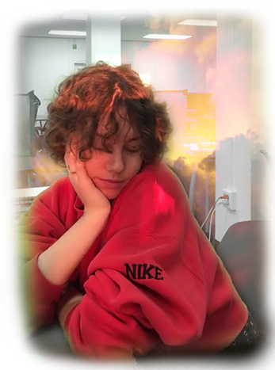

Libby enjoys magazines, the internet, "poetic programming", "critical thinking", drawing & arranging letters, "quality" journalism, serving looks, and serving espresso drinks. We hear she comes from the "desert" of New Mexico. She's proud that she coded this website all by herself but is sorry that she made it before she started learning "Javascript" and now is left with this big hot mess of amateur CSS.
When she had short hair